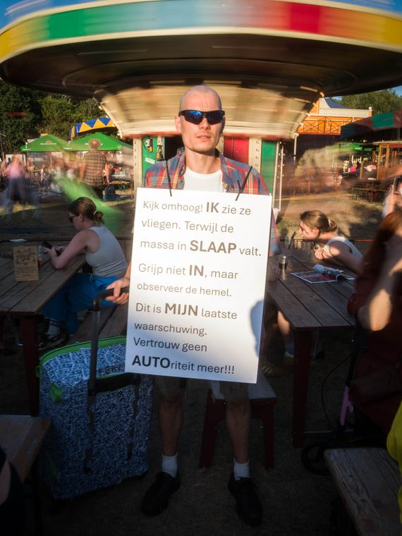

WilVVV – Voor Volk en Vaderland
We don't belong together, Lorens. Above all we have to manage to put up with each other.
Coming up
- 2027 VVV – Voor Volk en Vaderland Antiklimax / Grand Theatre Groningen
- 2027 Storm in a Glass of Water Het Zuidelijk Toneel · De Parade
- — Eenakter voor De Toneelmakerij De Toneelmakerij